自主制作In-house Production
适合核心能力范围内、规模可控的项目。由团队直接完成创意、内容、系统与交付。
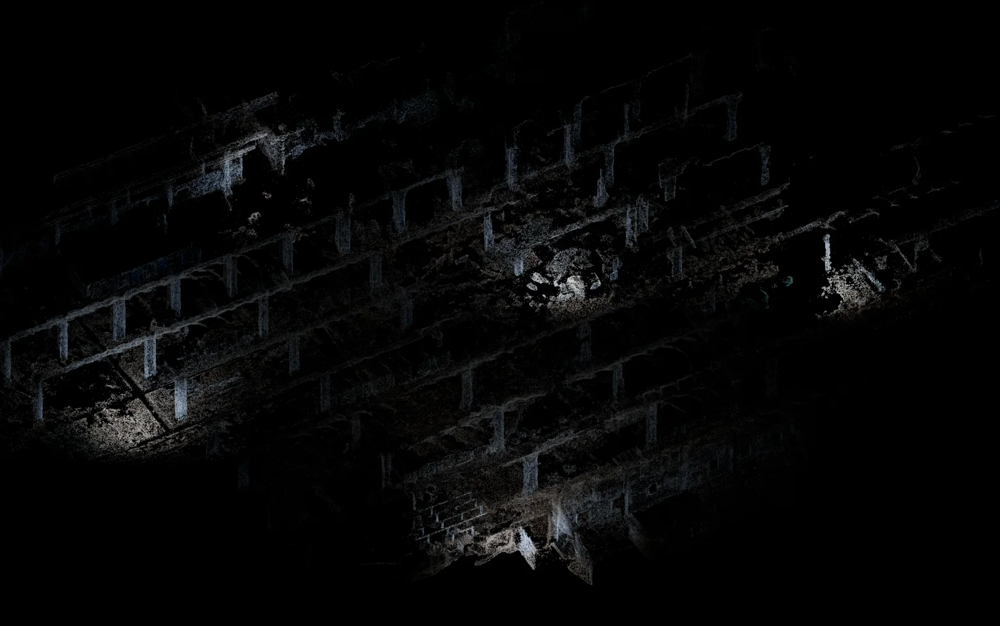
发布会、品牌影像、产品体验、互动零售与多感官空间。
Launches, brand films, product experiences, interactive retail and multisensory environments.
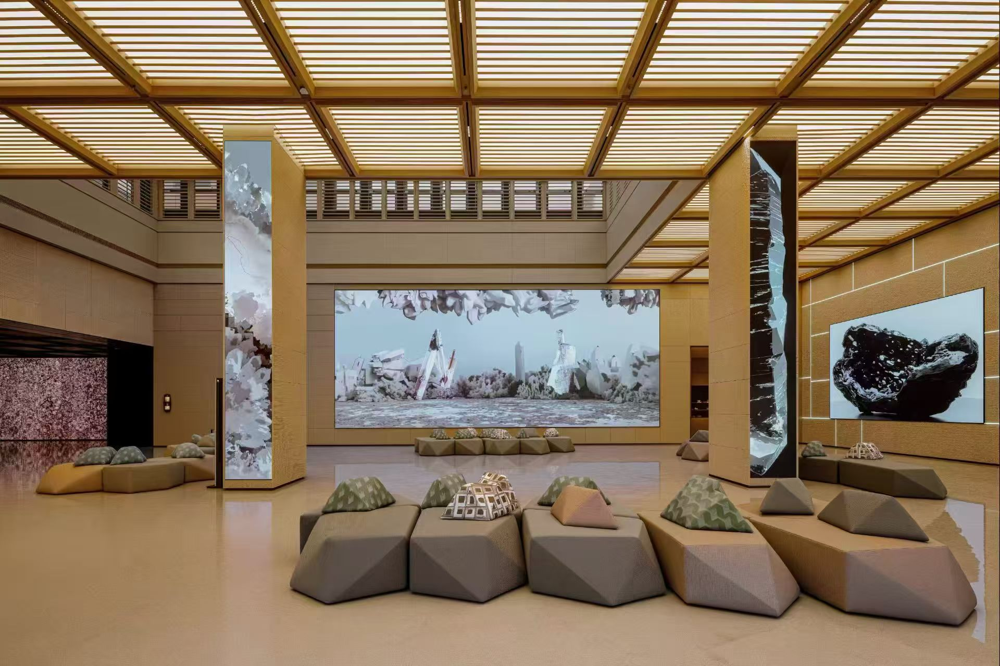
美术馆、博物馆、艺术节、城市更新、公共媒体艺术与文化叙事。
Museums, galleries, festivals, urban renewal, public media art and cultural storytelling.
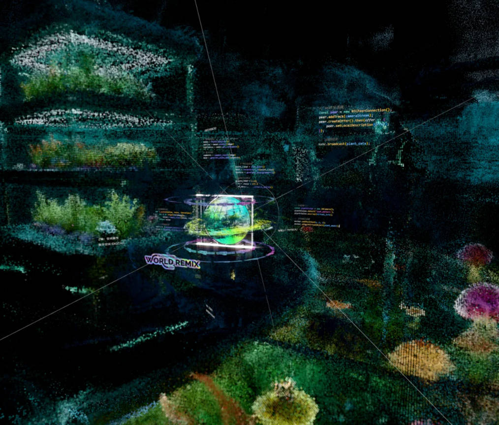
文旅、酒店、商业综合体、沉浸式展厅、数字场馆与长期运营内容。
Cultural destinations, hotels, mixed-use developments, immersive exhibitions, digital venues and long-term content programmes.

演唱会、音乐现场、游戏化体验、实时视觉、XR 与数字 IP 内容。
Concerts, live music, gamified experiences, realtime visuals, XR and digital IP content.
从创意方案、内容制作到技术整合和现场交付，服务按项目条件组合。
From creative direction and content production to technical integration and on-site delivery.

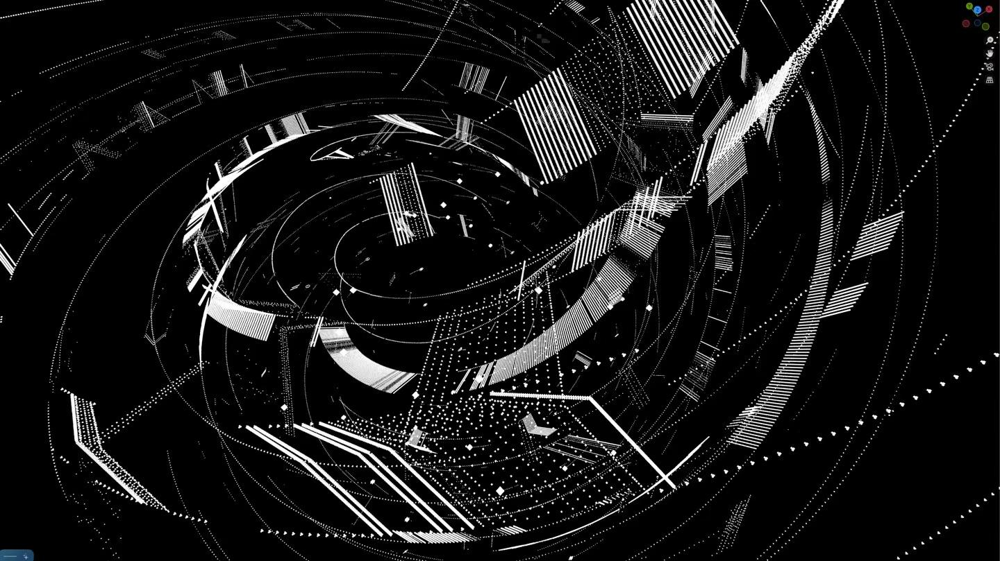
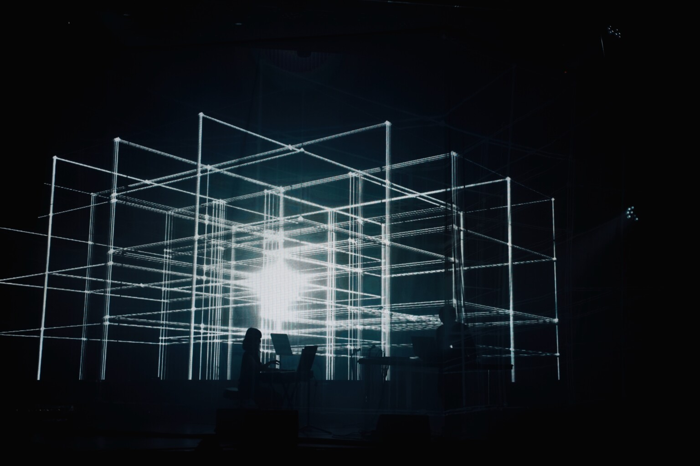


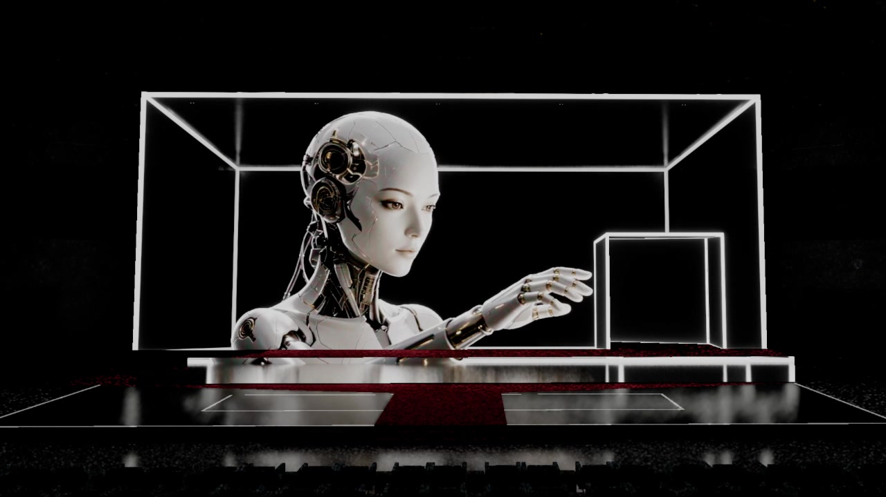
适合核心能力范围内、规模可控的项目。由团队直接完成创意、内容、系统与交付。
需要外部艺术家或专项技术时，由 VIRTURA 主导创意，并与成熟伙伴联合交付。
面向大型、多供应商项目，统一负责方案、预算、排期、质量控制、验收与最终交付。
先明确目标、空间、屏幕和时间，再确定创意与生产结构。每个阶段都有可确认的成果、成本和责任边界。
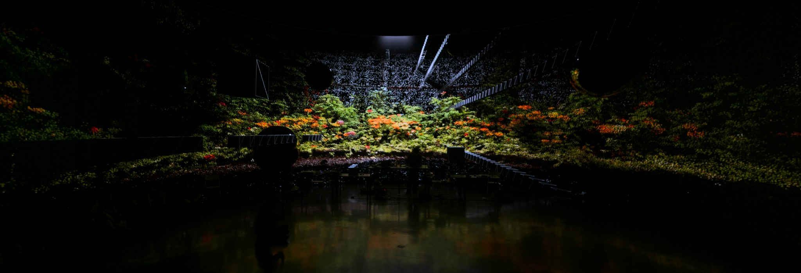
我们以体验设计和空间媒体为核心，从概念、影像、交互与声音出发，组织技术供应链并完成真实空间中的整体交付。
We work across experience design and spatial media, bringing concept, moving image, interaction and sound into an integrated production and delivery process.
VIRTURA 是在「轩空间感知（XUAN）」空间设计与项目实践框架下展开工作的跨学科艺术团队与创作共同体，并与 TZONE（上海图域）等相关团队在不同项目中协同推进空间内容与现场实践。
VIRTURA operates as an interdisciplinary art and creative technology studio within the spatial-design and project framework of XUAN, collaborating with specialist teams including TZONE across spatial content and on-site production.
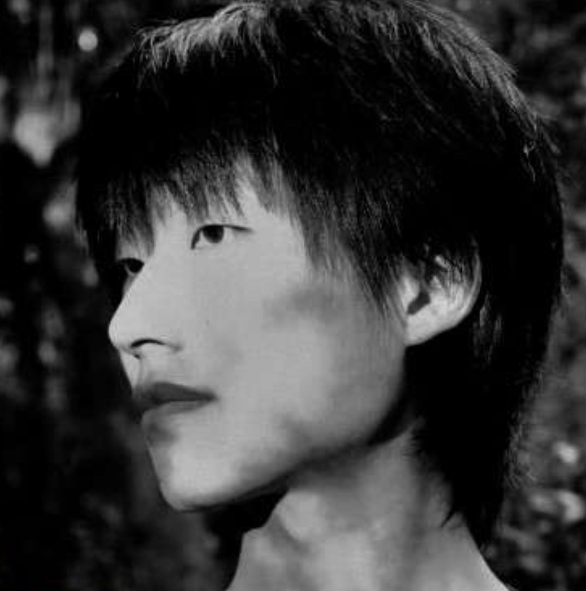
沉浸式空间体验研究者与媒体艺术家，实践横跨实时视觉系统、点云影像与音画结构。他持续将作品创作、空间预演与数字舞台系统组织为可复用的长期方法。毕业于河南工程学院数字媒体艺术专业，曾参与上海 UFO Terminal、深圳 BO LIVE、舟山 CAN Festival、上海 THE BOXX 与日本新宿 WPÜ 等场地及项目的现场视觉与空间媒体制作。
An immersive experience researcher and media artist working across realtime visual systems, point-cloud imagery and audiovisual structures. His practice brings artistic production, spatial previsualisation and digital stage systems into a sustained, reusable methodology. He studied Digital Media Art at Henan University of Engineering and has contributed to live visual and spatial media projects at UFO Terminal Shanghai, BO LIVE Shenzhen, CAN Festival Zhoushan, THE BOXX Shanghai and WPÜ Shinjuku, Japan.
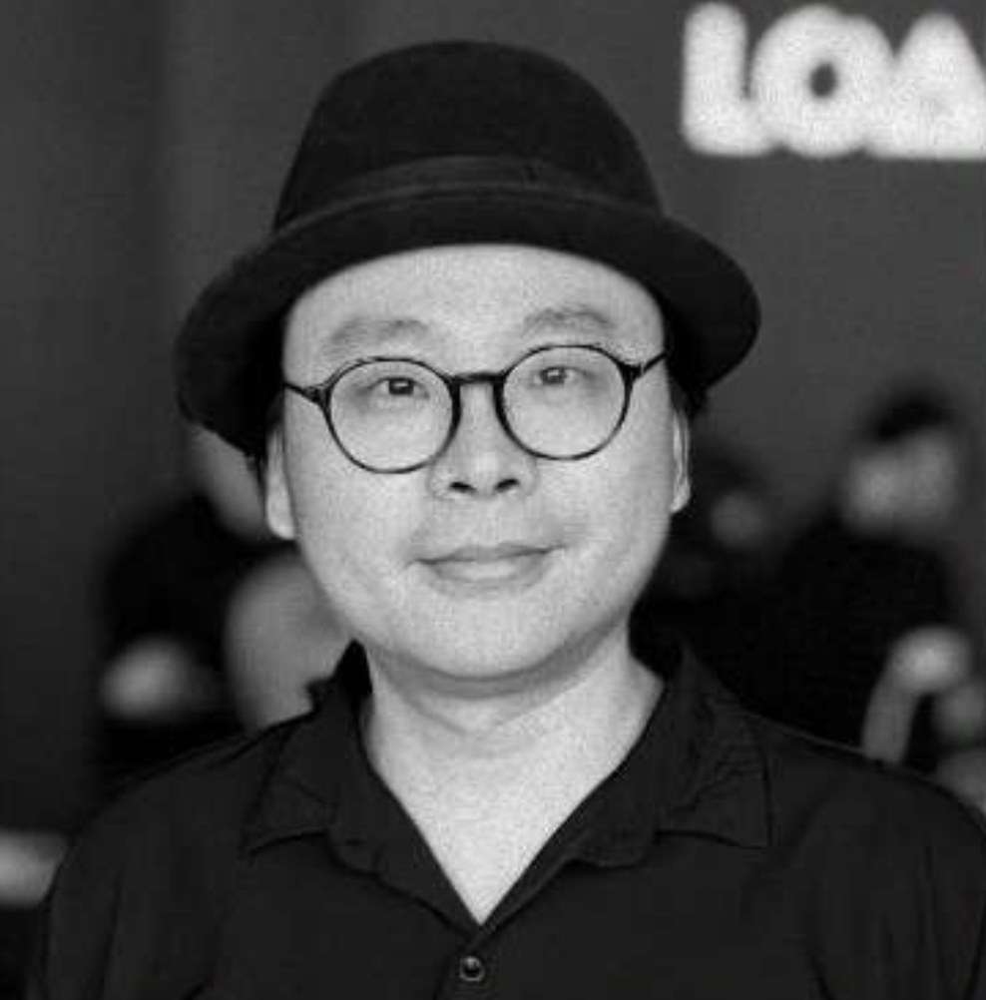
数字艺术家与策展人，长期从事空间设计、公共叙事与跨文化展览实践，关注如何在建筑、媒介与社会语境之间建立清晰的空间表达。毕业于中国美术学院视觉传达专业，后于法国里昂第三大学完成硕士学习。现任中国美术学院视觉传播学院客座导师、中国国家地理自然教育中心艺术顾问，并曾担任首届上海静安国际光影艺术节评委。曾获 2026 iF 设计奖，并获 MIA 2023 行业领军人物称号。
A digital artist and curator whose practice spans spatial design, public narrative and cross-cultural exhibition contexts. He develops spatial frameworks that connect architecture, media and social experience. He graduated in Visual Communication from China Academy of Art and later completed postgraduate study at Jean Moulin University Lyon 3. He is a guest tutor at the School of Visual Communication, China Academy of Art, an art advisor to the National Geographic China Nature Education Center, and served as a jury member for the inaugural Shanghai Jing’an International Light Art Festival. His recognitions include an iF Design Award in 2026 and the MIA 2023 Industry Leader title.
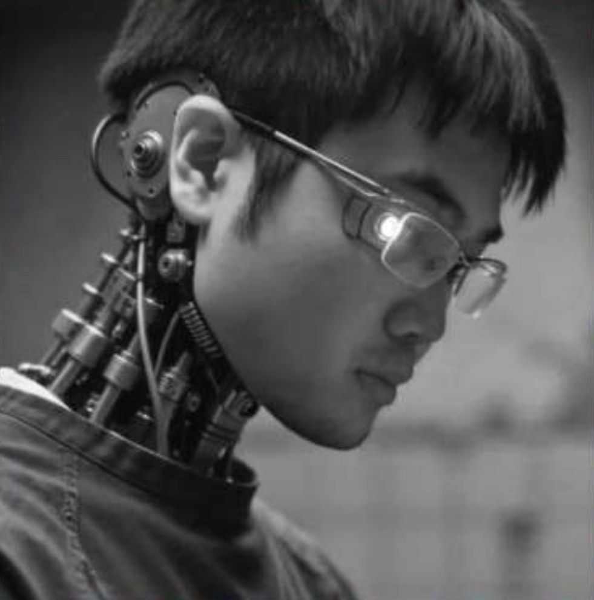
跨媒体艺术家与创意导演，伦敦大学金史密斯学院计算艺术硕士。专注互动体验、空间影像、视听系统与沉浸式装置，擅长概念转化、视觉与空间叙事、交互系统设计及跨专业协作，实践涵盖展览、剧院、公共艺术、文旅与城市空间。曾入围英国Lumen Prize流明奖沉浸式体验单元，作品于米兰引擎电影节、卡尔斯鲁厄IDIF电影节、柏林SUPERBOOTH、重庆光影艺术节、凯迪拉克·上海音乐厅及西岸美术馆等平台呈现。
A transmedia artist and creative director with an MA in Computational Arts from Goldsmiths, University of London. Their practice focuses on interactive experiences, spatial moving image, audiovisual systems and immersive installation, with expertise in concept translation, visual and spatial storytelling, interaction-system design and cross-disciplinary collaboration across exhibitions, theatre, public art, cultural destinations and urban environments. They were a finalist for the 2025 Lumen Prize Experiential Award. Their work has been presented at Milan Machinima Festival, INDEPENDENT DAYS International Film Festival (IDIF) in Karlsruhe, SUPERBOOTH in Berlin, Flowing Light — 1st International Light Art Show Festival in Chongqing, Cadillac Shanghai Concert Hall and the West Bund Museum.
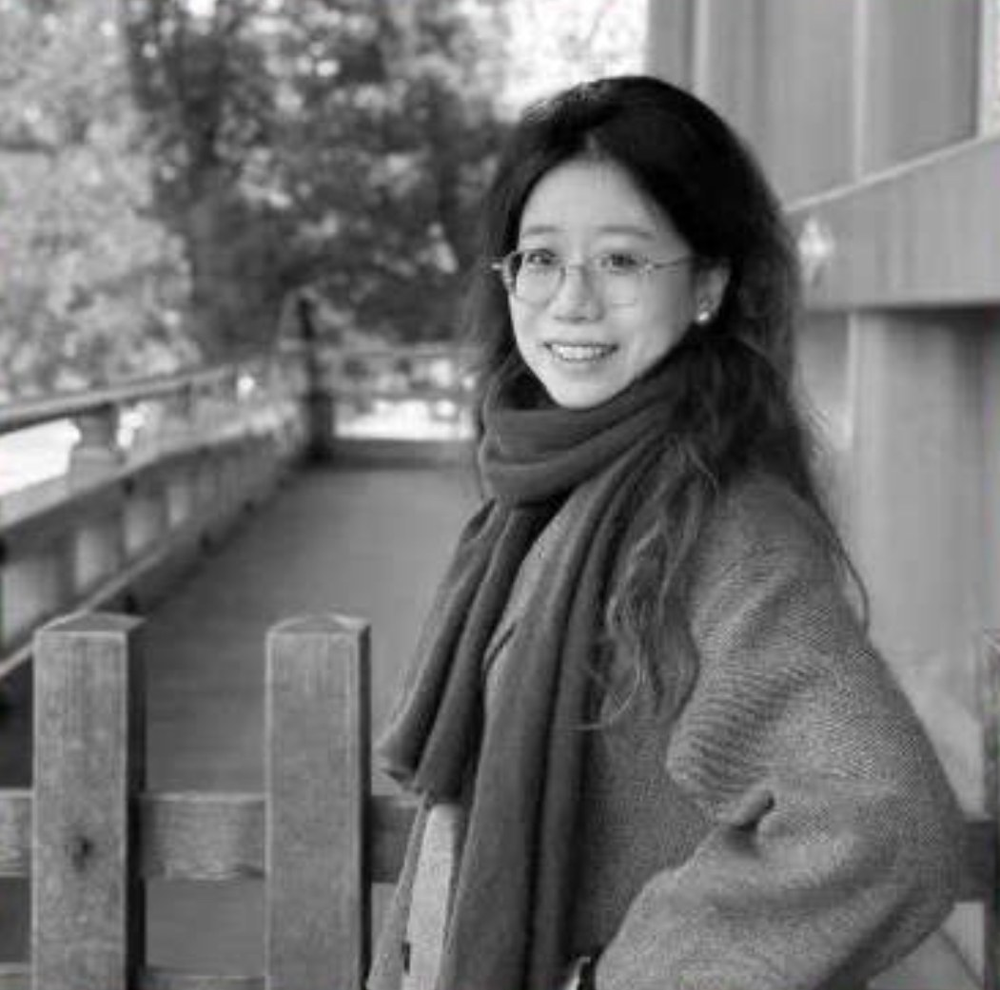
三维动态设计师与生成艺术创作者。她以具象对象为起点，通过数字重构、材质研究与抽象转译，建立带有个人印记的超现实空间与动态视觉语言。毕业于密歇根大学建筑专业。曾获上海国际光影节穹顶单元银奖、重庆“流光绘影”光影科技艺术节优秀作品奖，作品亦曾入选台北 Lumitree LED 光廊展映。
A 3D motion designer and generative artist whose work begins with recognisable objects and transforms them through digital reconstruction, material exploration and abstraction. She develops surreal spatial experiences and moving-image languages with a distinct personal signature. She studied Architecture at the University of Michigan. Her work received the Silver Award in the Dome category of the Shanghai International Light Art Festival and an Outstanding Work Award at the Flowing Light art festival in Chongqing, and has also been shown at Taipei’s Lumitree LED Corridor.
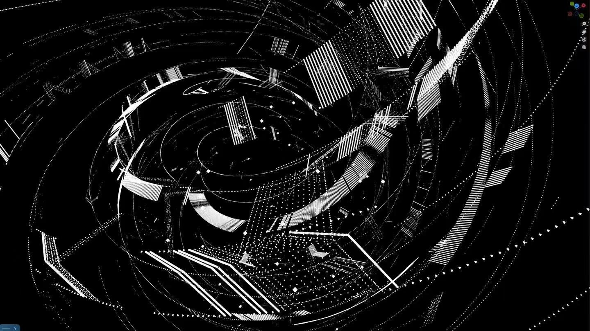
如果技术资料还不完整，也可以先说明场景和上线时间。我们会先判断制作模式、关键风险和下一步需要补充的资料。